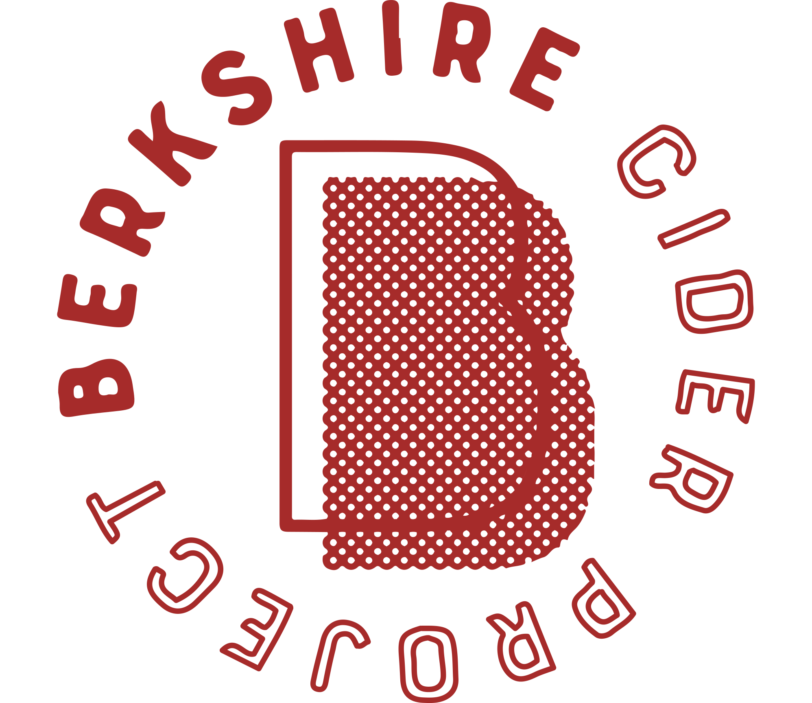
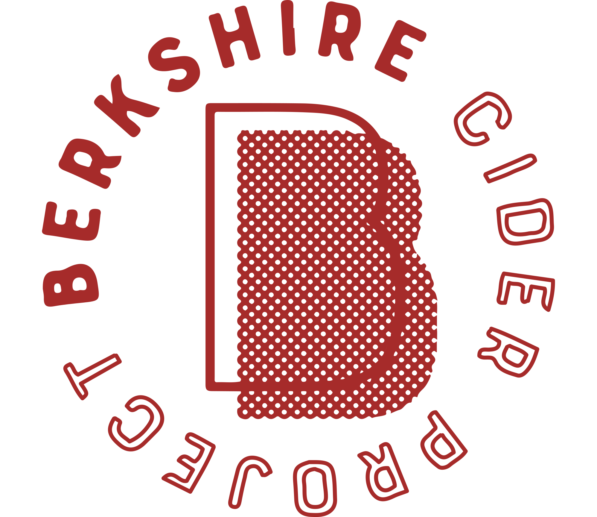

Hampshire County | Middlesex County
Uptappd:
(3.73)
34 N Maple St, Florence, MA 01062
438 Massachusetts Ave a, Cambridge, MA 02139
Franklin County
(3.55)
1209 Hawley Rd, Ashfield, MA 01330
Berkshire County
(3.78)
508 State Rd, North Adams, MA 01247
Worcester County
(3.21)
92 Wattaquadock Hill Rd, Bolton, MA 01740
(3.98)
115 Oak Hill Rd, Harvard, MA 01451
Hampshire County
Farm Shop, 295 River Dr, Hadley, MA 01035
Essex County
45 Fern Ave, Amesbury, MA 01913
31 E Brookfield Rd, North Brookfield, MA 01535
Suffolk County
(3.86)
256 Marginal St #32, East Boston, MA 02128
Hampden County
(N/A)
25 Bourne St, Palmer, MA 01080
(3.68)
108 Jackson St, Salem, MA 01970
(3.9)
324 Wells St, Greenfield, MA 01301
(3.37)
112 Forget Rd, Hawley, MA 01339
Plymouth County
(3.79)
Village West Shopping Center, Carver Rd, Plymouth, MA 02360
Middlesex County
(3.75)
16 Boon Rd, Stow, MA 01775
(3.42)
3 Graf Rd #15, Newburyport, MA 01950
(3.82)
508 Canaan Rd, Richmond, MA 01254
(3.58)
89 Pleasant St S, Natick, MA 01760
16 Walpole Rd, Haydenville, MA 01039
(3.81)
67 S Main St, New Salem, MA 01355
(3.43)
136 Main Rd, Westhampton, MA 01027
(3.59)
22 Littlefield Rd, Boxborough, MA 01719
94 John Gilbert Rd, West Brookfield, MA 01585
(3.69)
455 Highland Ave, Phillipston, MA 01331
(3.4)
143 Argilla Rd, Ipswich, MA 01938
Barnstable County
(3.67)
1336 Phinneys Ln, Hyannis, MA 02601
284 Morgan St, South Hadley, MA 01075
(3.74)
12 Sewall Brook Ln, Sherborn, MA 01770
208 Peckville Rd, Shelburne Falls, MA 01370


 
